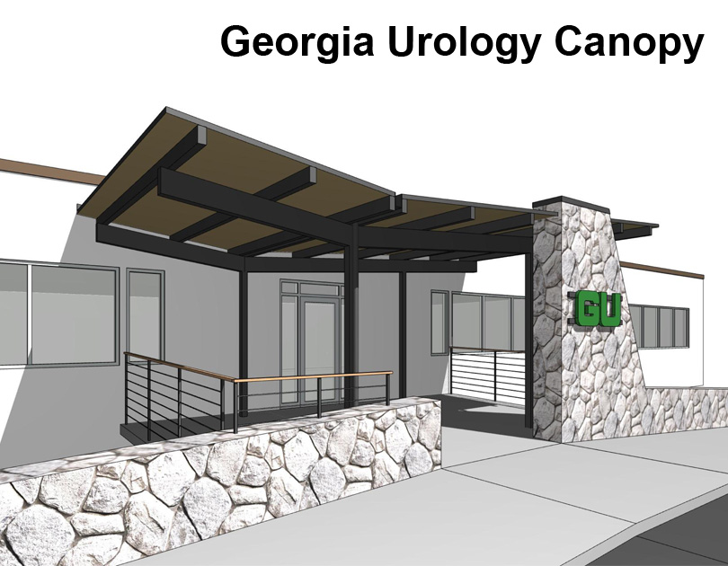

|  |
Bridging the Gap
The entry to Georgia Urology's Decatur office is located on the back side and second floor of a two-story building. At that location, the rectilinear, modernist building meets a stone wall and parking lot which is steeply sloped up to the entry. The problem to be solved was – literally – how to bridge the gap between these two conditions. The designed solution was to use a pitched roof to reflect the sloping of the stone wall, and to articulate it in a minimalistic fasion to reflect the design of the existing buidling.
Funds for this project originated from money left over from a previous tenant buildout. Unfortunately, after construction documents were completed, the extra funds found use elsewhere.
Location |
Decatur, GA |
Year |
Designed 2017 |
Type |
Design Study |
Team |
Peacock Partnership |
Program |
Entry canopy replacement |